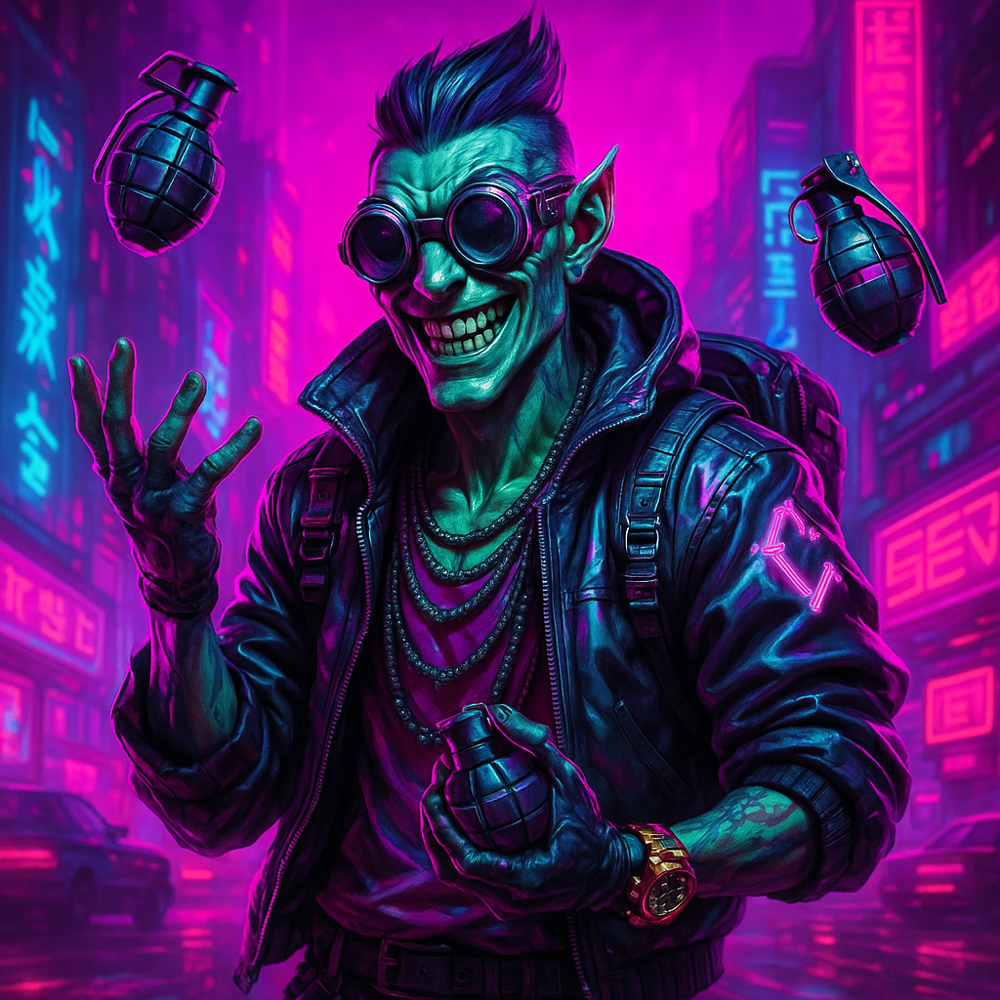
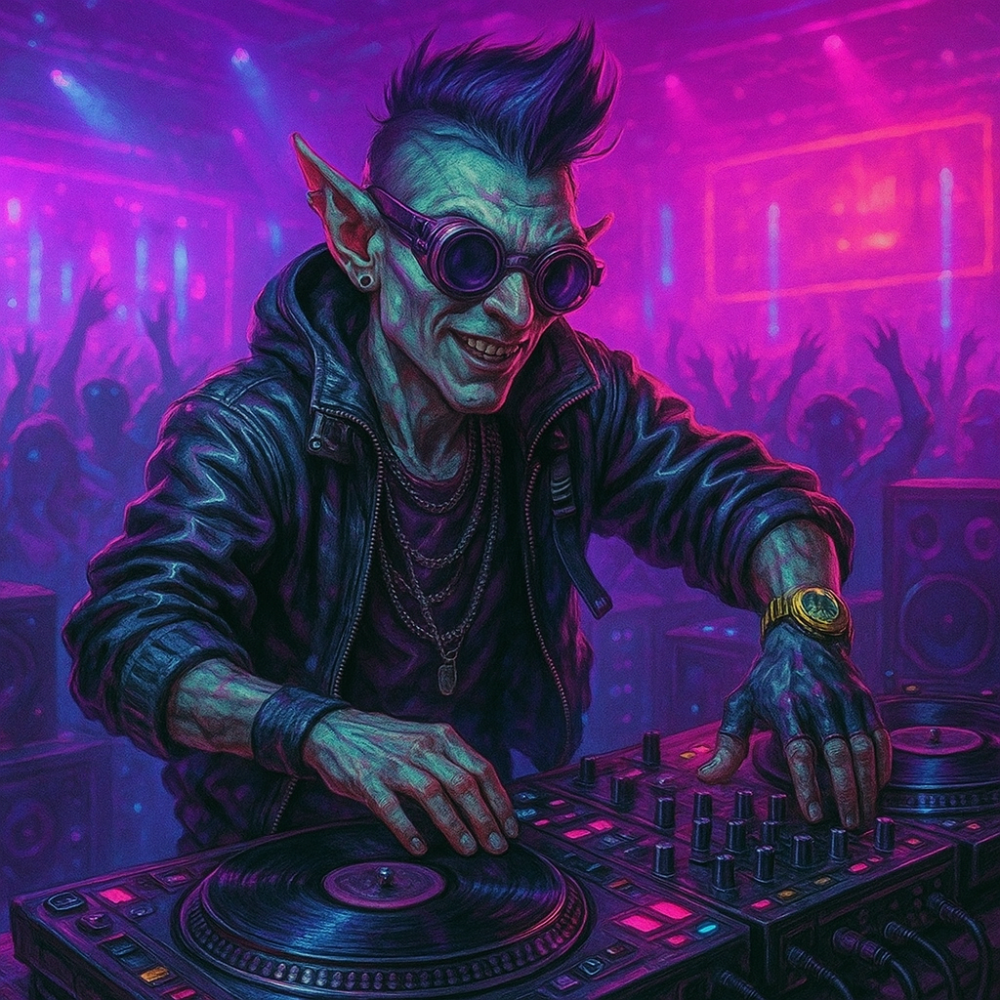
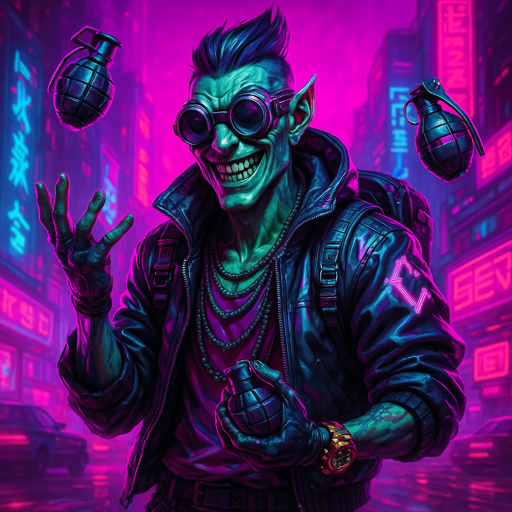
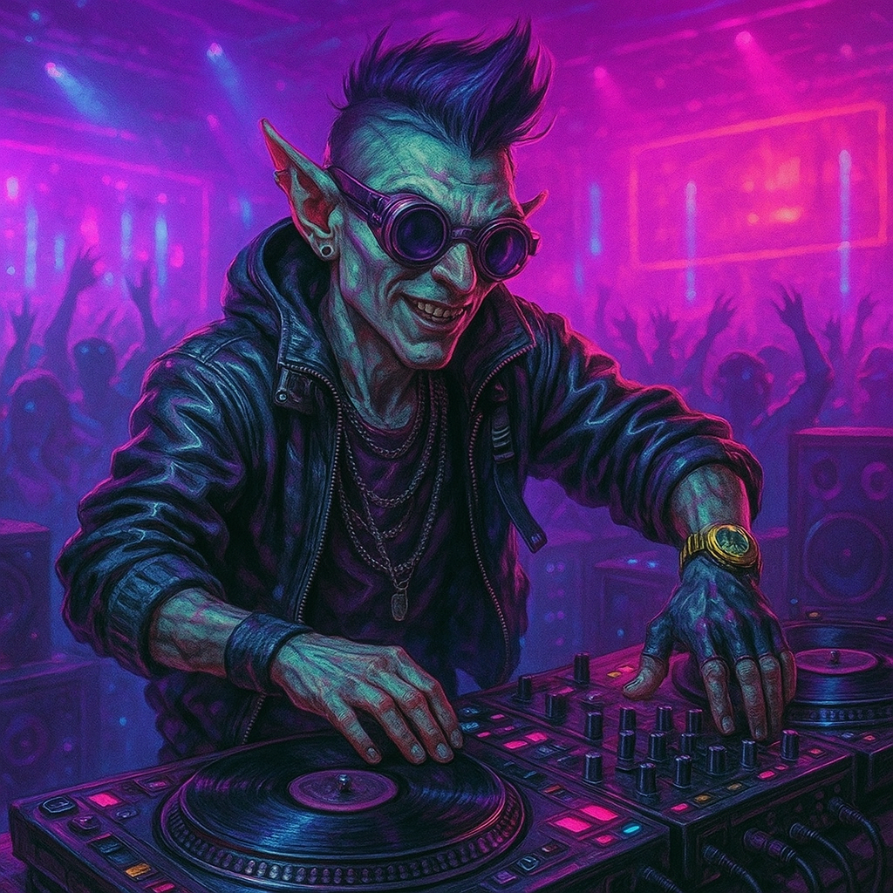

Info
Name: Bayani Gonzales
Metatype: Gnome (Dwarf)
Gender: Male
Age: 20
Height: 1.2 m
Look: Fashionably skinny, stylish hair, obvious fake tan
Adjectives: Belligerent, drug-addled, thrillseeker
Attributes
- Body: 5
- Agility: 5 (7)
- Reaction: 5 (7)
- Strength: 2 (4)
- Charisma: 2
- Intuition: 4
- Logic: 2
- Willpower: 6
- Edge: 3
- Essence: 1.12
- Magic: -
- Initiative: 11 + 3d6
Skills
Active Skills
- Automatics (AGI): 6
- (Assault Rifles +2)
- Perception (INT): 6
- Heavy Weapons (AGI): 1
- (Grenade Launchers +2)
- Pilot Ground Craft (REA): 1
- (Wheeled +2)
- Sneaking (AGI): 1
- Throwing Weapons (AGI): 1
- (Non-Aerodynamic +2)
- Unarmed Combat (AGI): 1
- (Blocking +2)
Knowledge Skills
- English (INT): N
- Bars and Clubs (INT): 1
- (Seattle +2)
- Fashion (INT): 3
- Gangs (INT): 1
- (Seattle +2)
- Radical Groups (INT): 1
- (GreenWar +2)
- Street Drugs (INT): 1
Qualities
Edges
- Arcane Arrester: 2
- Biocompatibility: Cyberware
- Drug Tolerant
- Exceptional Attribute: BOD
- Thermographic Vision
Flaws
- Allergy: Chocolate (Uncommon, Moderate)
- Neoteny
- Poor Self Control: Braggart
- Poor Self Control: Thrillseeker
- Prejudiced: Law Enforcement (Specific, Biased)
Assets
Lifestyle
Middle Lifestyle: Apartment in Central Downtown
Body Mods
- Damage Compensators (Rating 3)
- Obvious Full Cyberarms (AGI 10, STR 7, Physical 9)
- Custom AGI 7, Enhanced AGI +3, Custom STR 4, Enhanced STR +3, Cyber Holster
- Orthoskin (Rating 2)
- Smartlink
- Wired Reflexes (Rating 2)
Gear
- Light Pistol
- Concealed Holster
- Basic Commlink
Contacts
- Greta "The Shadower" - Underworld Information Broker
- Max "The Fixer" - Mercenary Leader